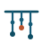

lockup · light

mark · dark
mark · tint
favicon · 28px min
The mark abstracts an Incan
quipu
: a horizontal primary cord with pendant cords hanging from it, each bearing knots. One knot is clay — the crystallised skill.